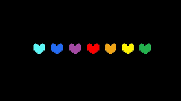

Ja comentamos sobre a estrutura genocida e pacifista, mas como ela funciona na pratica?
Basicamente, quando a humana Frisk cai no buraco ela é obrigada a entrar em combate com as criaturas do
mundo, mas não necessariamente lutar. A escolha é tomada a partir desta tela:
O que cada uma significa?
ATACAR
Atacar é o básico do princípio GENOCIDA, é usado para casos de combate. Caso queira um caminho
pacifista, não há o porque usa-lo.
AGIR
Agir é uma forma ambígua, pode ser usado no estilo GENOCIDA ou PACIFISTA. Basicamente ali se formam
opções de rebaixar o oponente para provoca-lo ou usar de sua habilidade carismática para contornar a
batalha e deixar seu oponente de lado
ITEM
Item é acumulado a partir de seus ganhos no jogo, os itens são coletados aleatóriamente. Eles podem
servir de diversas formas no jogo, o formato mais comum é o de RECUPERAR HP
PIEDADE
A piedade é o princípio do modo PACIFISTA, ele serve para basicamente, ter piedade de seus
oponentes, deixar-los ir.
ALMAS
Quem pouco pesquisa o jogo, já consegue visualizar sobre os corações que o compõem. E não, os corações
coloridos não são apenas por estética ou feito por postagens de fãs. No jogo, eles tem significados
importantes!

Veja aqui os significado de cada alma:
Vermelha
A alma vermelha tem a origem desconhecida, mas no jogo é visualizada apenas como a ALMA de Frisk, a
personagem principal do jogo.
Azul Claro
A alma azul claro é conhecida como PACIÊNCIA, em batalha se toma dano se se mover durante algum ataque
inimigo.
Laranja
A alma laranja é a BRAVURA, e em batalha se toma dano ao ficar parado em um ataque.
Azul
A alma azul, por sua vez, é conhecida como INTEGRIDADE. Na batalha a alma é afetada pela gravidade, ou seja
, em pulos a alma é puxada para o chão.
Roxa
A alma roxa significa PRESERVERANÇA, na batalha a alma se movimenta apenas por linhas horizontais.
Verde
A alma verde é a BONDADE, nesse modo a alma fica parada com um escudo móvel para se proteger de ataques.
Amarela
A alma amarela é definida por JUSTIÇA. Aqui, a alma é equipada com um atirador, um modo de defesa.